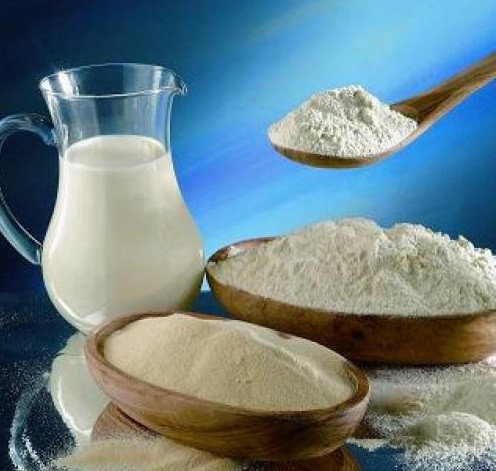
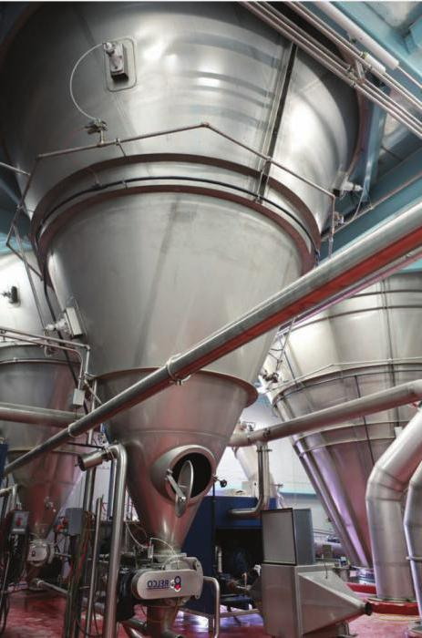

ОПИСАНИЕ ПРОДУКТА
Обезжиренное сухое молоко - это порошок белого или кремового цвета, получаемый путем высушивания обезжиренного коровьего молока. Продукт используется для потребления населением в местах, куда доставка натуральной молочной продукции затруднена, а также в пищевой промышленности и некоторых других сферах. Характеристики сухого молока строго регламентированы стандартом ГОСТ Р 52791-2007.
ПОЛЕЗНЫЕ СВОЙСТВА
Интересно, что после соответствующей обработки сухое обезжиренное молоко сохраняет все свои полезные свойства. В нем остается полный витаминный комплекс: А, С, В, Н, D, РР, Е, а также все полезные минералы, которые находились в исходном сырье. Среди них есть: йод и марганец, железо и селен, натрий, фосфор, магний и другие элементы. А по содержанию кальция молоко превосходит все известные в природе продукты. Также в высушенном продукте очень мало холестерина, поэтому его смело могут употреблять в пищу люди, страдающие повышенным давлением и различными сердечными заболеваниями. Кроме того, в нем огромное количество белка, нужного для строения мышечной ткани. Возможно, поэтому молоко - это продукт, который в первую очередь дают маленьким детям. А еще в нем есть такие аминокислоты, которые просто необходимы организму для нормального протекания многих процессов синтеза. Обладая такими показателями, сухой продукт часто используется для искусственного наращивания мышечной массы. Правда, употреблять его нужно в ограниченных количествах (мужчинам - от 200 до 250 грамм, а женщинам - от 100 до 150 грамм в сутки).
ПРОЦЕСС ИЗГОТОВЛЕНИЯ ПРОДУКТА
Производство включает в себя несколько стадий, проходя через которые, обычный сельскохозяйственный продукт превращается в готовый товар. Таких этапов всего семь:
- Приемка сырья. Молоко, привезенное с фермы, подогревают до 40 градусов, а затем направляют на очистку, где оно освобождается от возможных примесей.
- Нормализация. Очищенное сырье поступает в сепаратор, где происходит отделение СОМа от сливок.
- Пастеризация и охлаждение. Обезжиренная часть молока сначала нагревается до 85 градусов, а затем охлаждается.
- Сгущение. Промежуточный продукт поступает в вакуумный аппарат, где происходит выпаривание влаги до содержания сухих веществ 40-48 процентов.
- Гомогенизация. Масса нагревается до 60 градусов для получения однородной консистенции.
- Сушка. «Сгущенка» с помощью насоса нагнетается в сушильную камеру.
- Упаковка. Готовый продукт фасуется в упаковочную тару.
ПРИМЕНЕНИЕ ПРОДУКТА
- Изготовление производных молочных продуктов в пищевой промышленности;
- Приготовление детских молочных смесей и каш, которые используются для прикорма или в качестве замены грудному вскармливанию;
- Изготовление йогуртов, заквасок, творога и творожных продуктов;
- Применение в кондитерской промышленности как компонент готовых продуктов питания, десертов и т.п.;
- Изготовление сладкого сгущенного молока и продукции из него;
- Приготовление мороженого и десертов из него;
- В качестве добавки в ароматизаторы, стабилизаторы, загустители и другие компоненты, которые используются в пищевой промышленности;
- Как компонент в хлебобулочных изделиях;
- В масложировой промышленности для изготовления сливочного масла и комбинированных масел, в состав которых входят растительные и животные жиры;
- Для приготовления готовых кормов для домашних животных в сельском хозяйстве;
- Для приготовления молочных напитков;
- В алкогольной промышленности для приготовления напитков на основе молока;
- Для изготовления плавленых сыров, глазированных сырков и другой подобной продукции;
- В мясной промышленности для изготовления консервов;
- Для приготовления замороженных продуктов и полуфабрикатов;
- В заведениях общественного питания для приготовления супов, закусок, кремов, соусов и готовых блюд с большим количеством компонентов.
Материал взят с источников: